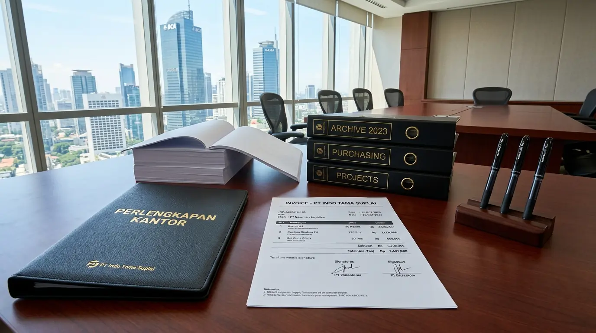

Mengapa Perusahaan Membutuhkan Vendor Perlengkapan Kantor Invoice Bulanan?
Perusahaan membutuhkan vendor perlengkapan kantor invoice bulanan karena fasilitas pembayaran tempo berkala mampu menjaga stabilitas arus kas (cash flow), menyederhanakan pencatatan administrasi keuangan, serta memberikan kepastian pasokan barang tanpa terhalang prosedur pembayaran tunai harian. Berdasarkan data B2B Financial Procurement Survey 2025-2026, sebanyak 84,6% perusahaan menengah hingga skala besar di Indonesia mengutamakan kerja sama dengan penyedia yang memfasilitasi sistem konsolidasi tagihan bulanan. Laporan Corporate Treasury Efficiency Index 2025 juga mencatat bahwa penggunaan billing terpusat mengurangi beban kerja tim akuntansi sebesar 38,2% dalam memproses verifikasi kuitansi belanja rutin.
Kemudahan administrasi belanja konsumabel merupakan kunci utama dalam menjaga efisiensi divisi pengadaan. Transaksi pembayaran eceran yang berulang setiap kali mengajukan pesanan baru tidak hanya membuang waktu, tetapi juga meningkatkan risiko ketidakcocokan laporan pembukuan akhir bulan. Oleh karena itu, menjalin kemitraan pengadaan bersama distributor resmi Perlengkapan Kantor menjadi solusi strategis untuk mengamankan kebutuhan kerja sekaligus merapikan tata kelola keuangan perusahaan Anda.
Berikut adalah tabel perbandingan sistem transaksi pembayaran belanja operasional kantor:
| Parameter Evaluasi | Sistem Invoice Bulanan (TOP B2B) | Pembelian Tunai / Reimbursement |
|---|---|---|
| Dampak Pada Arus Kas | Sangat Stabil (Pembayaran Terjadwal) | Tertekan (Pengeluaran Kas Harian) |
| Efisiensi Administrasi | Sangat Tinggi (1 Faktur Per Bulan) | Rendah (Puluhan Nota Berceceran) |
| Kepastian Stok Barang | Garansi Ketersediaan Stok Kontrak | Tergantung Stok Eceran Toko |
| Fasilitas Diskon B2B | Diskon Grosir Kontrak Berkelanjutan | Harga Eceran Toko Normal |
- Penggunaan skema TOP (Terms of Payment) 30 hari memungkinkan modal kerja dialokasikan untuk aktivitas produktif lain sebelum tagihan operasional jatuh tempo.
- Konsolidasi seluruh transaksi ke dalam satu faktur pajak gabungan mempermudah rekonsiliasi PPN masukan di akhir periode masa pajak.
- Sistem Purchase Order (PO) resmi menutup celah pengeluaran kas tanpa izin (unauthorized spending) di tingkat departemen internal.
Apa Saja Kriteria Utama dalam Evaluasi Layanan Vendor B2B?
Kriteria utama dalam evaluasi layanan vendor B2B meliputi kejelasan skema Terms of Payment (TOP), kelengkapan varian katalog produk, kepastian pengiriman tepat waktu, serta ketersediaan dokumen faktur pajak resmi yang valid. Kemitraan yang transparan memastikan seluruh proses belanja konsumabel berjalan aman dan mematuhi regulasi perpajakan yang berlaku.

Penataan dan penyediaan stok konsumabel kerja lengkap dari penyedia resmi Perlengkapan Kantor untuk menunjang produktivitas korporat.
Faktor Penentu Keandalan Distributor Pasokan Perkantoran:
- Kecepatan Respon Layanan: Kehadiran dedicated account manager yang siap memproses pesanan darurat dan mengonfirmasi ketersediaan barang dalam hitungan menit.
- Jaminan Keaslian Produk: Seluruh unit barang dikirim langsung dari produsen resmi berstandar tinggi tanpa risiko barang tiruan yang cepat rusak.
- Fleksibilitas Plafon Kredit: Pemberian limit belanja bulanan yang proporsional dan dapat disesuaikan seiring pertumbuhan skala operasional bisnis Anda.
- Kerapian Dokumen Tagihan: Lampiran Surat Jalan, Tanda Terima Gudang, dan e-Faktur Pajak lengkap yang memudahkan pencocokan berkas (three-way matching PO).
Bagaimana Prosedur Pengajuan Kontrak Pembayaran Tempo dengan Vendor?
Prosedur pengajuan kontrak pembayaran tempo dengan vendor dilakukan dengan menyertakan berkas legalitas perusahaan (NPWP, NIB, SIUP), mengajukan profil estimasi belanja bulanan, menentukan batas jangka waktu pembayaran (14 atau 30 hari), serta menandatangani perjanjian kerja sama B2B.
Tahapan Pengajuan Skema Invoicing yang Sistematis:
- Pengumpulan Dokumen Legalitas: Melengkapi salinan identitas resmi perusahaan (NIB, NPWP, Akta Perusahaan) untuk proses analisis kelayakan kredit oleh tim finance vendor.
- Analisis Limit Kredit Belanja: Menentukan besaran batas maksimal tagihan bulanan (credit limit) sesuai proyeksi rata-rata konsumsi alat tulis dan kertas kerja.
- Penandatanganan MoU Pengadaan: Mengunci kesepakatan daftar harga grosir tetap (fixed price list) serta durasi jatuh tempo pembayaran faktur (14, 30, atau 45 hari).
- Aktivasi Akun B2B Perusahaan: Memulai proses pemesanan barang secara praktis melalui WhatsApp khusus corporate support atau portal PO resmi penyedia.
- Guna memastikan kelancaran pasokan konsumabel kerja perusahaan Anda, hubungi tim ahli Perlengkapan Kantor kami sekarang untuk mendapatkan fasilitas invoice bulanan dengan penawaran harga grosir terbaik.
- Cari pasokan ATK cepat dengan jangkauan terdekat di supplier ATK terdekat Jakarta bergaransi suplai aman.
- Pelajari panduan alokasi anggaran bulanan secara detail pada panduan pengadaan ATK korporat untuk memangkas pengeluaran berlebih.
Faktor Apa Saja yang Memengaruhi Stabilitas Pasokan Konsumabel Perusahaan?
Faktor yang memengaruhi stabilitas pasokan konsumabel perusahaan meliputi kapasitas gudang penyimpan milik distributor, keandalan armada pengiriman internal, ketepatan jadwal pemesanan ulang dari tim purchasing, serta kepastian jaringan manufaktur produk. Gangguan pada salah satu rantai pasok dapat memicu kelangkaan kertas, toner printer, atau binder ordner yang berpotensi menghentikan operasional administrasi.
- Kapasitas Gudang Terpusat: Menjamin ketersediaan stok ribuan rim kertas HVS dan ratusan varian ATK siap kirim sewaktu-waktu tanpa masa tunggu pabrik (lead time) yang lama.
- Armada Logistik Internal: Mengeliminasi risiko keterlambatan ekspedisi pihak ketiga dengan pengiriman langsung ke alamat kantor atau gedung pencakar langit Anda.
- Jadwal Re-Order Terjadwal: Penetapan jadwal pengiriman rutin mingguan atau dua mingguan yang mengantisipasi lonjakan konsumsi kertas menjelang tutup buku bulanan.
- Garansi Tukar Barang (SLA): Kepastian penukaran produk rusak atau salah kirim dalam waktu maksimal 1x24 jam kerja.
Memilih mitra yang memiliki jaringan logistik luas adalah jaminan utama kelancaran aktivitas bisnis. Bekerja sama dengan distributor Perlengkapan Kantor memastikan seluruh kebutuhan meja kerja staf selalu terpenuhi tanpa jeda.
Pertanyaan Populer Seputar Vendor Perlengkapan Kantor Invoice Bulanan (FAQ)
Kesimpulan Praktis
Bermitra bersama vendor perlengkapan kantor invoice bulanan merupakan keputusan finansial yang sangat cerdas untuk mengamankan arus kas, menyederhanakan pembukuan akuntansi, dan menjamin ketersediaan konsumabel kerja harian. Didukung oleh jaringan pasokan terpercaya dan fasilitas B2B dari Perlengkapan Kantor, seluruh urusan pengadaan bisnis Anda terjamin lancar.
Siap mengoptimalkan tata kelola pengadaan barang di kantor Anda? Hubungi tim corporate procurement kami hari ini untuk konsultasi plafon kredit belanja, pembukaan akun B2B resmi, dan penawaran katalog harga grosir terbaik!

Penulis: Tim Redaksi Perlengkapan Kantor
Divisi riset pengadaan dan manajemen keuangan korporat di Perlengkapan Kantor. Berfokus pada optimalisasi arus kas B2B, efisiensi operasional pengadaan ATK korporat, dan standarisasi tata kelola fasilitas perkantoran modern. Ditinjau oleh Pakar Strategi Procurement & Keuangan Korporat.